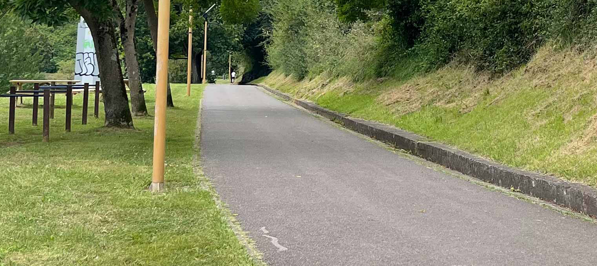
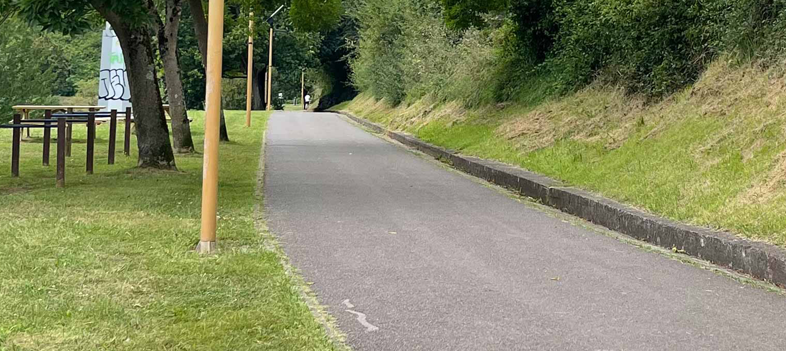

Un parque que lo tiene TODO
Parque de Purificación Tomás
Un parque que lo tiene TODO


Un parque que lo tiene TODO
Parque de Purificación Tomás
Un parque que lo tiene TODO
La pista más grande de la ciudad de Oviedo.
 Pista Finlandesa
Pista Finlandesa
La pista Finlandesa, es un espacio por el que se puede pasear y
que, al mismo tiempo, nos ofrece a lo largo del recorrido puntos habilitados para realizar diversos
ejercicios físicos.
En él podrás encontrar | Senderismo | Gimnasio al aire libre |
Un lugar ideal para caminar al aire libre.

Una pista ideal para practicar deporte.
 Deporte en la Pista Finlandesa
Deporte en la Pista Finlandesa
La pista Finlandesa de Oviedo tiene un recorrido llano y muy cómodo de realizar. A lo largo de su recorrido uno se siente en plena naturaleza, y lo mismo se puede encontrar con caballos, que con las famosas vacas asturianas. Numerosas opciones pensadas para disfrutar Oviedo de una manera que quizá no se os había ocurrido: Oviedo al aire libre
 



Por lo general, se considera una
ruta moderada, que se tarda una media de 1 h 14 min en recorrer. Esta ruta
es popular para correr y pasear, sin embargo, podrás disfrutar de algo de paz durante los
momentos más tranquilos del día.


La ruta principal de la Pista
Finlandesa es un recorrido lineal de 2,7 km (5,4 km ida y vuelta) que comienza en la Calle
Pedro Caravia y termina en Fitoria. Es un trayecto llano y fácil, ideal para ciclistas de
todos los niveles.

Este gimnasio es un espacio
diseñado para que los usuarios puedan realizar ejercicios físicos en un entorno natural.
Este gimnasio cuenta con varios aparatos y estaciones de ejercicio que permiten trabajar
diferentes grupos musculares.

¿TE GUSTA SALIR A CAMINAR?
Caminar al aire libre no solo mejora tu salud cardiovascular y fortalece tus músculos, sino que también reduce el estrés, aumenta la creatividad, y mejora tu estado de ánimo al conectarte con la naturaleza.
Explora y Disfruta
 Otras actividades a realizar en la Pista Finlandesa.
Otras actividades a realizar en la Pista Finlandesa.
Esta pista ofrece
otras actividades con las que se puede disfrutar de la naturaleza:
1-Observación de fauna y flora.
2-Yoga y meditación.
3-Fotografía.
Sobre Nosotros
Somos un equipo apasionado de desarrolladores y diseñadores dedicados a crear experiencias web
únicas.
Nuestra misión es transformar la experiencia de visitar los parques por excelencia
de oviedo
en realidades digitales que sean visualmente atractivas, intuitivas y fáciles de ver.
© 2024 Parque Purificación Tomás. Todos lo derechos reservados